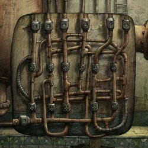

Concatenative programming, or point-free style, is useful sometimes, but has some serious drawbacks similar to the SKI combinators. Applicative programs can be compiled into point-free style easily, but writing and reading them directly in large scale is usually a mental burden.
It only works well with functions with one or two arguments. Concatenation of functions with more than two arguments will not be so convenient. If the receiver has an argument order that is different from the sender's output order, you will need a non-trivial permutation of argument order.
For example, if the function is defined as:
f :: Int -> String -> Bool
f x y = ...
If you want to use it as the predicate for filtering a list of strings, that's fine. You just write something like filter (f 2) .... But what if you want to filter a list of integers? Then you will need to swap the order of the first two arguments before you can do the partial application. So you write filter (flip f 2) .... Fine. But what if the function looks like:
g :: Int -> A -> String -> Bool
g x y z = ...
And you want to filter a list of A's? Which function do you use to switch the argument order, and you expect the reader of the program to learn it?
What about functions with four arguments. Notice that there are 4! = 24 different argument orders. How many order switchers do we need?
In order to prevent this kind of plumbing, we have to take unnecessary care when we decide the order of the parameters. This often makes the function look ugly.
Names are more convenient. Notice that even mathematics uses names for permutations (as in algebra):
(a b c d)
(b a d c)
Concatenative programming is like connecting the components of a circuit. But even electronic engineers don't do it this way. They use net-lists with names and labels.
Names are essential and useful in most cases. Concatenative programming, although nice when used sparsingly, may not be good to serve as a major way of composition.
At this point, I found this sentence from Tao Te Ching (Chapter 1) especially relevant:
"The nameless is the origin of Heaven and Earth The named is the mother of myriad things"